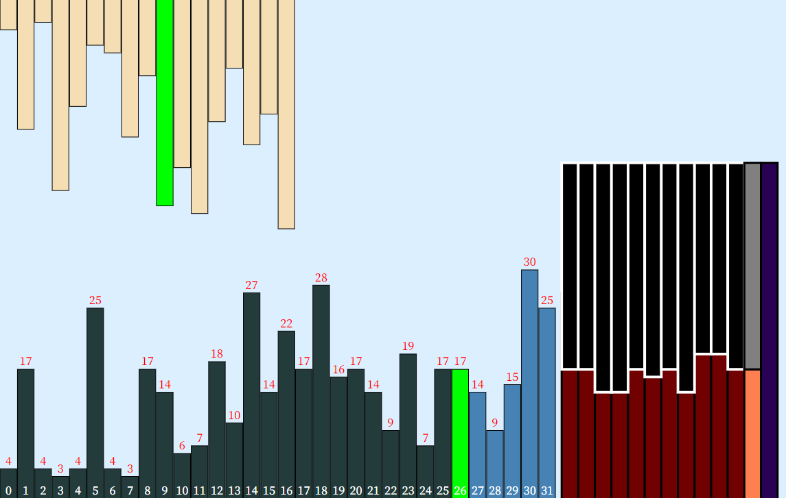
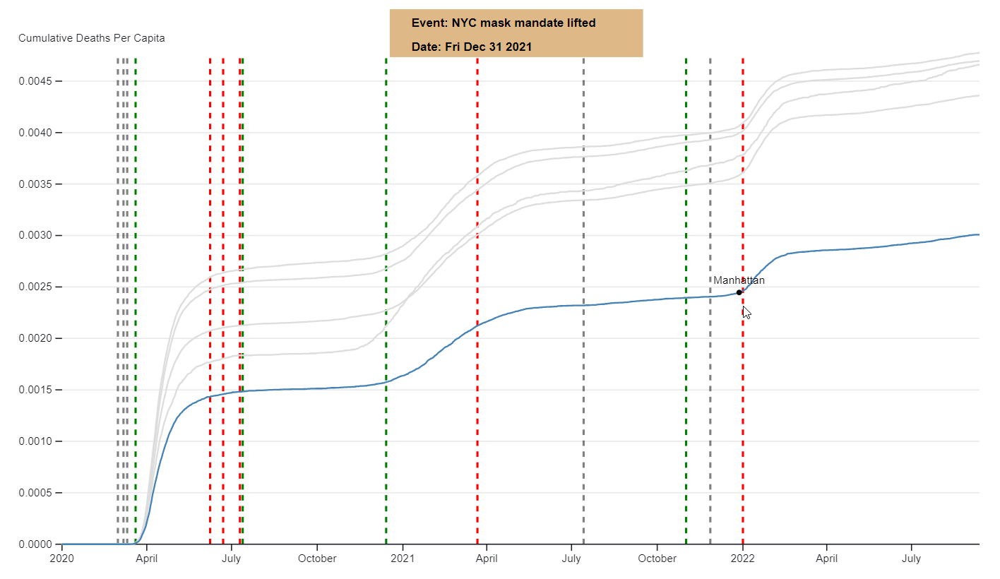
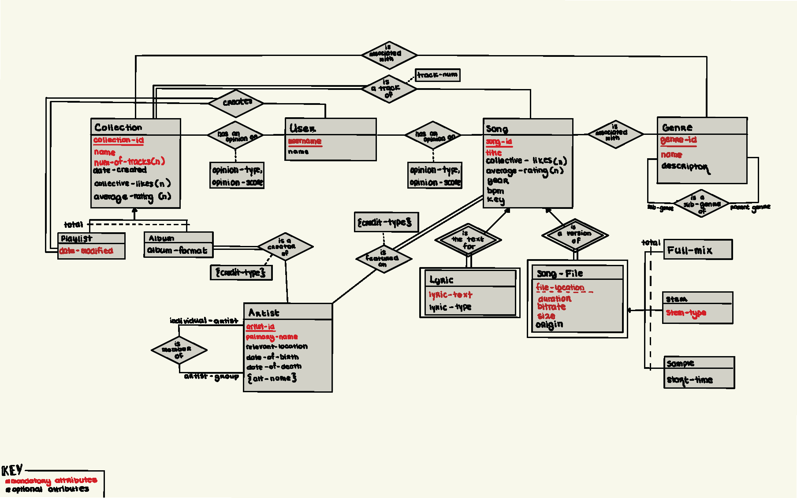
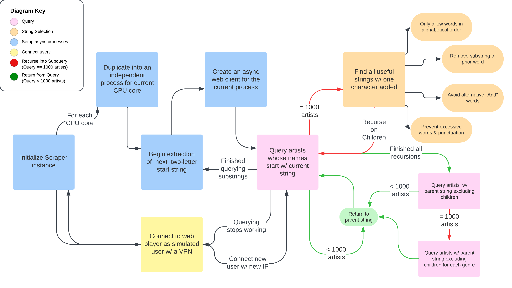

On "Off the Air"
Explored the audiovisual storytelling of the show "Off the Air" using a variety of multimodal processing and
machine learning tools. These include PCA clustering, K-means color extractions, frame-level audio classification, and
real-time visualization of audio features.

Mandala Clock
Designed an abstract mandala
generator made that constantly changes form using the current second, minute, hour, and
day

Visualizing Finidng Sums in an Aarray
Created dynamic visualizations of the nature
and efficacy of the various methods
to find all pairs and triples in an
array that sum to a
value. Created graphic comparing
time and operations for each type of
algorithm.

NYC Covid-19 Exploratory Visual
A simple but powerful tool to
compmare Covid-19 stats amongst the
five boroughs of NYC relative to
major events during this time.

Music Library Database & Web Interface
Created a PostgreSQL database and a
corresponding Flask web interface to
store music library data dynamically
with multiple linked
versions of songs

Spotify Artist Extractor
Created a high-performance script
that facilitates async calls within
a multiprocessing framework to
simulate an active music listener,
allowing Spotify's API rate-limiting
to be bypassed. This resulted in
being able to extract almost all artists on
Spotify (over 13 million) in a very
small amount of time.